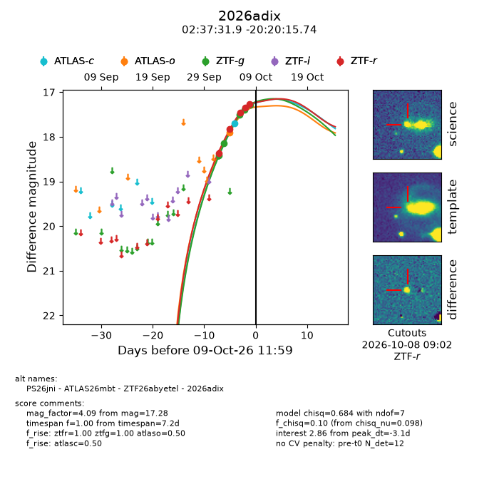
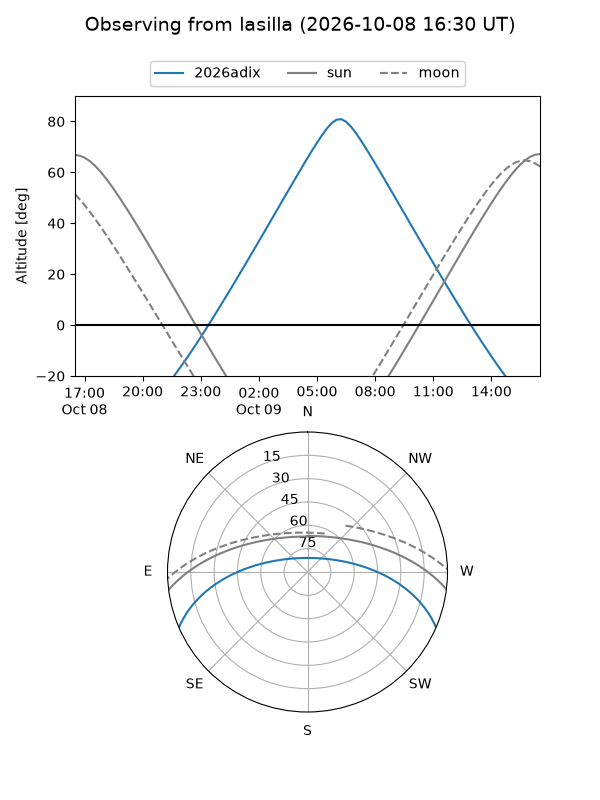
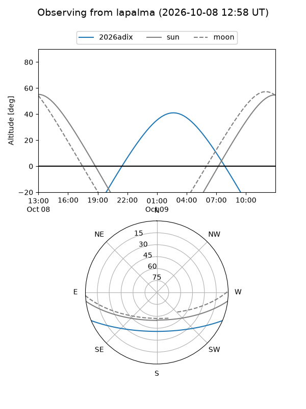
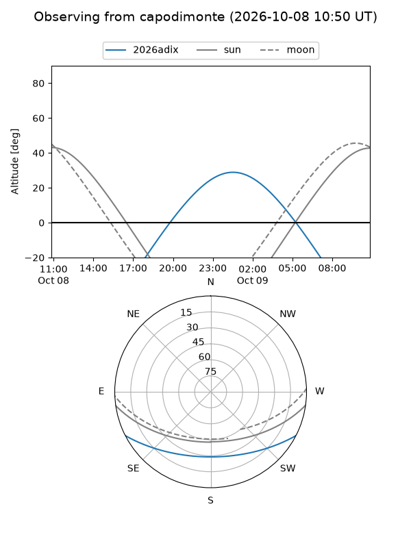
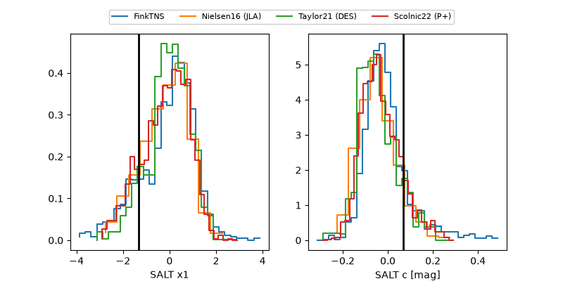

2026adix
Target 2026adix at 2026-10-09 12:01
Aliases and brokers:
FINK-ZTF: ztf.fink-portal.org/ZTF26abyetel
Lasair-ZTF: lasair-ztf.lsst.ac.uk/objects/ZTF26abyetel
ALeRCE-ZTF: alerce.online/object/ZTF26abyetel
YSE-PZ: ziggy.ucolick.org/yse/transient_detail/2026adix
TNS name: wis-tns.org/object/2026adix
Direct TNS query: direct search
alt names
ZTF26abyetel (ztf,fink_ztf)
2026adix (tns,yse)
ATLAS26mbt (atlas)
PS26jni (panstarrs)
Coordinates:
equatorial (ra, dec) = 39.3829,-20.33771
equatorial (HMS+DMS) = 02:37:31.89,-20:20:15.74
galactic (l, b) = (203.0105,-64.84415)
Flags:
peak dt: -3.1
Photometry:
last atlasc=17.71, atlaso=17.90, ztfg=17.28, ztfr=17.27
1 atlasc, 1 atlaso, 5 ztfg, 5 ztfr detections
Lightcurve

Visibility



Additional plots
